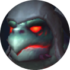
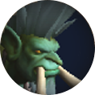

Tři tortollani, jeden vetřelec
Tři tortollanští průzkumníci — First Mate Nama, Scrollsage Iku a Trader Gebbo — hlídají sarkofág prastarého Soulcoilera. Je to jednofázový fight, ale v pozadí tiká čtvrtá, neviditelná hrozba: duch Mor'zahi. Sám o sobě nic nedělá, ale jakmile nabije energii na 100 %, je po raidu. Jediná obrana je nakrmit želvy rybou z beden dřív, než k tomu dojde — a každá nakrmená želva si tím natrvalo odemkne těžší verzi svojí schopnosti, která pak běží se zbytkem fightu už napořád.
Nestlačujte všechny tři k sobě. Pokud jsou všichni tři do 30 yardů od sebe, získávají United Defense — 99% redukci damage, dokud se nerozejdou. Nama a Iku se tankují zvlášť, Gebbo se vůbec tankovat nedá — pobíhá po plošině a hází bedny na náhodné hráče.
Fish-feed mechanika. Mor'zahi tiše nabírá energii k Empower castu — kolem 90 % je čas na první rybu. Rybu (Disgusting Fish) lze na každou želvu použít přesně jednou, natrvalo jí to odemkne ultimátní verzi schopnosti. Video-guide doporučuje pořadí Nama → Iku → Gebbo, i když jiné zdroje řadí Gebba jako první — pořadí je spíš otázka strategie než pevné pravidlo. Zmeškání okna spouští wipe mechaniku Final Ascension.
Když jedna želva umře, zbylé dvě enragují. Proto je nutné držet HP všech tří přibližně vyrovnané. Tankovací trik: Namu vždy párujte s želvou, co má momentálně víc HP, a tu slabší si odtáhněte stranou, ať se jí nedostává tolik cleave damage.
Schopnosti trojice a Mor'zahi
Každá želva má vlastní základní kit — a jednu mocnou ultimátní schopnost, kterou jí natrvalo odemknete rybou.
Nelze tankovat
Fyzická hrozba
Frost/fire caster
Neviditelná časovaná bomba
Mapa arény
Přímá kopie reálného raid plánu publikovaného guildou na raidstrats.gg — pozice, ikony i poznámky jsou přesně z jejich dat (včetně případných překlepů v poznámkách), nejde o mou interpretaci. Šipkami/tečkami pod obrázkem procházíte jednotlivé scény.



Gebbo chodí jako vandrák kolem dokola - nejde tankovat
Iku si vybere náhodného hráče na kterého skočí
Čím je hráč dál od raidu, tím menší raid dmg
Iku cástí pravidelně spell
Kickujeme, když projde, tak je zapotřebí dispell
Znežít želvy pokud možno najednou
Pořadí znežití: Gebbo, Nama, Iku

Gebbo hází do místnosti krabice
Šlápnutím na krabici dostane hráč bleed,
v jedné krabici je ryba, kterou vybraný hráč sebere
tak rybou dáme facku želvě - reset energie
želva dostane novou abilitu
pokud MorZahi docástí = wipe
Tři groupy
Hráči bez groupy se přidají do nejbližší
Tři projektily, které dávájí stun
Na zem hodí plošku a dostanou debuff
Přechodem přes opačnou plošku zmizí ploška i debuff
Vyčištění plošky dá raidwide dmg = postupně
Náhodný hráč dostane bombu
S bombou odběhne od raidu
Výbuch bomby udělá ohnivou vlnu
Šlápnutím na houbu vlnu přeskočíme
Nešlapat na houby dokud není výbuch!
V průběhu fightu dotáhnou Iku/Nama ke Gebbovi a druhého držet bokem
Přehled: Nama a Iku se tankují odděleně od Gebba (nedá se tankovat, chodí po místnosti). Nikdy nesmí být všichni tři pohromadě.
Fish-feed: Gebbo hází krabice, jedna má rybu. Při 95 energii Mor'zahi nakrmíme želvu (reset energie, nová abilita). Jen 3 ryby za fight.
Nama — Mighty Thud: tři skupinové soaky s odhozem (G1/G2/G3), plus Shell Spin (3 projektily se stunem).
Iku — Frostfire Volley: pravidlo 3P (Párovat, Položit, Prohodit) mezi ohnivým a ledovým kroužkem.
Gebbo — Mushroom Toss + Explosive Surprise: bomba odběhne od raidu, houby se používají na přeskočení vlny.
Tankování: Shredding Shards (tauntswap ~7 stacků), Steady Strikes. Postupně se Iku/Nama táhnou ke Gebbovi.
Časová osa fightu
Pull a positioning
Nama a Iku se tankují od sebe, Gebbo pobíhá volně po plošině. Namin frontální kužel hned natočte mimo raid.
První ryba
Jakmile se Mor'zahi blíží k plnému nabití, nakrmíte první želvu (video doporučuje začít Namou) — natrvalo jí to odemkne ultimát, který od teď běží se zbytkem fightu.
Druhá a třetí ryba
Stejný postup pro Iku a Gebba, jakmile Mor'zahiho energie zase naroste. Po třetí rybě běží najednou všechny tři ultimátní schopnosti.
Interrupt a HP balance
Iku běží na nepřerušenou interrupt rotaci. Namu párujte se silnější želvou a HP všech tří držte vyrovnané — smrt jedné totiž enragne zbylé dvě.
Co sledovat za tanka, healera a DPS
Tankování
- Namin kužel hned natočte mimo raid, Iku tankujte zvlášť od Namy.
- Taunt-swapujte proaktivně na Steady Strikes i na 7. stack Shredding Shards.
- Namu párujte se silnější želvou, tu slabší si odtáhněte stranou.
Healing
- Konstantní damage z Malevolent Presence/Evil Eyes celý fight.
- Šetřete cooldowny na okna ultimátů (Frostfire Volley, Mighty Thud).
- Sledujte hráče zasažené bednami — jsou mimo pozici a zranitelní.
Damage
- Běžte nepřerušenou interrupt rotaci na Icebound Flames.
- Ryby sbírejte jen když jste určeni, nespěchejte to.
- Hlídejte HP všech tří želv — jedna mrtvá dřív znamená enrage zbylých dvou.
- U Frostfire Volley si najděte partnera s opačným typem kruhu a proběhněte si je navzájem.
Normal → Heroic → Mythic
| Obtížnost | Co se mění |
|---|---|
| Normal | Základní verze všeho výše, velkorysý timing a damage. |
| Heroic | Přísnější interrupt rotace (méně prostoru pro chybu), sladěnější pohyb během ultimátů, vyšší damage. |
| Mythic | Přidává Relic Rupture — rozbité bedny aplikují raid-wide stackující Splinters bleed, nerozbité bedny po 25 sekundách samy vybuchnou a dají damage. Nutí přísnější a rychlejší úklid beden než na nižších obtížnostech. |
Kvíz k mechanikám
Šest otázek na hlavní mechaniky fightu. Vyberte odpověď — správná se zvýrazní zeleně, chybná červeně.